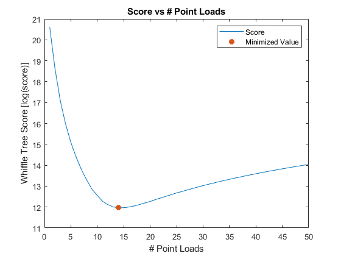

% moment_error(x,27.25,2001) errors = loopWeight(2001,27.25); plot((1:50),log(errors)) title("Score vs # Point Loads") xlabel("# Point Loads") ylabel("Whiffle Tree Score [log(score)]") hold on errorV = zeros(50,2); for v = (1:50) % used to find the point load value for the minimum score errorV(v,1) = v; errorV(v,2) = errors(v); end location = errorV(errorV(:,2) == min(errors)); % calculation for point load value plot(location,log(errors(location)),"*","LineWidth",4) legend("Score","Minimized Value") hold off x = discretize_load(location,27.25,2001); format shortG
Functions
function resForce = discretize_load(p,L,w) % using geometry to resolve the distributed load dx = L/p; for i = 1:p rectangle(i,2) = dx * 2001 * (1 - (dx*i)/L); triangle(i,2) = dx * .5 * (2001 - (2001 * (1 - (dx)/L))); resForce(i,2) = rectangle(i,2) + triangle(i,2); rectangle(i,1) = (dx * 2*i) / 2 - dx/2; triangle(i,1) = (dx * 2*i) / 2 - (2*dx)/3; resForce(i,1) = (rectangle(i,1) * rectangle(i,2) + triangle(i,1) * triangle(i,2)) / (rectangle(i,2) + triangle(i,2)); end end function error = moment_error(matrix,L,w,point) holderMatrix = matrix(matrix(:,1) >= point,:); % look at all values above the point newMatrix = [holderMatrix(:,1) - point, holderMatrix(:,2)]; % create a matrix of those point forces Mpoint = 0; for d = 1:size(newMatrix,1) Mpoint = Mpoint + (newMatrix(d,1) * newMatrix(d,2)); % sum all force * lever arm (moments) end Mpoint; Mdist = (1/6) * (((-w / L) * point^3) + (3 * w * point^2) - (3 * w * point * L) + (w * L^2)); % Matt's equation for moment error = abs(Mpoint - Mdist); % absolute value of the difference is the error end function weight = loopWeight(w,L) % weightVec = zeros(1:50); for k = 1:50 MSE = 0; f = discretize_load(k,L,w); % discretize the load with the current value of k for j = 1:100 x = (L/100) * j; holder = moment_error(f,L,w,x); % pass that discretized load and the current value of x to find error MSE = MSE + holder^2; % sum the errors end C = 500 * k^2; % find the cost from the given equation weightVec(k) = C + (1/100) * MSE; % score is the combination of these end weight = weightVec; end